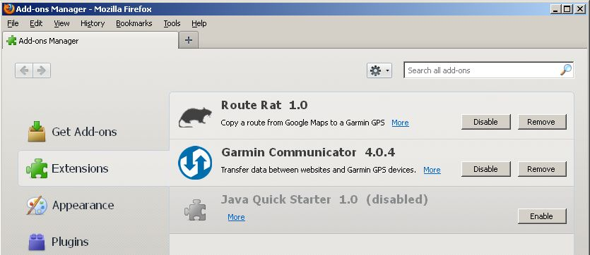
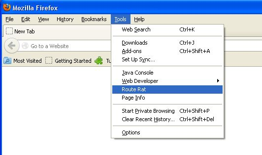
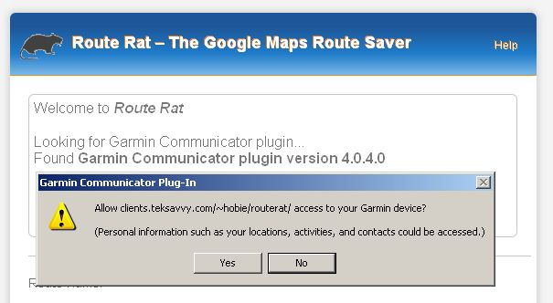

Route Rat is a free extension for the Mozilla Firefox browser that allows you to easily save a route you have plotted on a Google Maps map to your connected Garmin GPS device. That's all it does! No features, settings, configuration options or other unpleasantness!
Once installed, use Firefox to go to Google Maps and plot out a route manually, or by using the Get Directions feature. You can add as many additional destinations as you like and drag the route line around according to your preference. Then, select the Route Rat menu item from Firefox's Tools menu. The Route Rat web page will open with your route data present. Simply connect your GPS, and when Route Rat recognizes it, type in the name you would like to call the route and click the Save button. You can then disconnect your GPS, import the route using the Garmin Tools menu and you are ready to go.
First, in order to use Route Rat, you must first own a Garmin GPS model that allows the owner to import custom routes. To determine if your GPS is capable, consult this chart and look for an X next to your model under the ROUTES column. If you don't know your model number, you can go to the Garmin WebUpdater to find out.
Second, you must be using the Firefox browser on a computer running Windows or Mac OS 10.5 or later. Firefox must also have the free Garmin Communicator plugin installed in the browser, which you may get here or from the Add-Ons Manager (Tools → Add-ons menu) in Firefox.
Finally, you will have to install the Route Rat extension in Firefox. It will soon be available directly from the creators of Firefox via the the Add-ons Manager, but meanwhile, it can be installed by clicking on the button below.
To install from here, you must save the file to a known location. Then, from the File menu in Firefox, open the file. Firefox will prompt you to install the extension, so click on the Install button.
After installation, go to the Tools → Add-ons menu and show the Extensions list. It should show both Garmin Communicator and Route Rat similar to below

Under the Tools menu, you will find a new menu item, Route Rat.

If you click on it, nothing will happen! It will only respond when your active browser tab is Google Maps and will only be useful if you have already mapped your route.
After you have created your route and clicked the Route Rat item on the Tools menu, a new tab will open in your Firefox browser. The first time you visit the Route Rat page, the Garmin Communicator plugin will display a warning and ask you if you wish to allow the site to access your device.

After clicking yes, you will see your route data appearing in the bottom box on the Route Rat page, and some messages will appear in the top. If you are using NoScript or have JavaScript disabled in the browser, you will have to enable it for this page or nothing will work.
Route Rat will attempt to determine if your GPS device is hooked up and available for receiving the route. If it is already connected then you should see a message identifying the device by model number. If it is not hooked up, a error dialog will appear advising you to connect it and click the Find Device button, which should now be visible on the page. Like any other USB device, it will take ten seconds or so for Windows (or Mac) to realize a new device is connected and will show it on its list of storage drives. When that happens, you can click on Find Device and wait for the message informing you that the GPS has been found.
Now you must type in a name for the route in the entry field in the centre of the form. This is the name by which you will find the route while using the GPS. If you pick a name of a route that is already on the device, the GPS will append a number to the name so that it will be unique. Click the Save button and wait for the message informing you that the saving is complete.
You may now click Exit on the page and safely disconnect your GPS. In Windows, use the Safely Remove Hardware icon in the system tray at the bottom right of your Windows screen. I have no idea how to do this on a Mac, but there must be a way.
Power on your GPS and go to the Tools page. Don't select the Routes icon from this page; you won't find it there yet. You must first Import the route to make it selectable in this section.
From the Tools page on the GPS, select My Data. From the displayed list, select Import Route(s). If there is no menu item for Import Route(s) in this list, your GPS model does not allow you to use routes. If you check the link in the Installation section above, you can confirm this.
Find your route by the name you typed in earlier and select it. This route will now be available in Routes section of the Tools page for you to select and use.
Route Rat is written and maintained by Hobie Orris and is released under the MIT License.
Route Rat includes code from the GMapToGPX project written by Josh Larios, which the author has made available under the Creative Commons License.